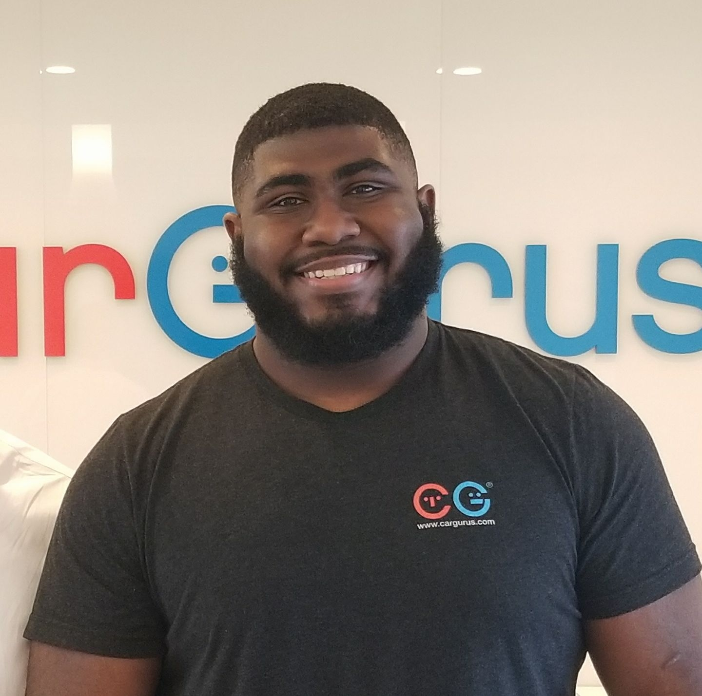

Home
Malcolm Akinje
malcolm.akinje@gmail.com

Skills
- Programming Languages: C++, C#, Java, MySQL
- Version Control: Git
- API's and other software: Jenkins, Maven JUnit, Jira, Selenium Testing, Command Line
Experience
July 2018 - Present
Big Red Planet LLC, Remote - Gameplay and UI Programmer
- Worked on the project One More Night
- Launched on the Steam marketplace under early access
- Sold over 1000 copies to date
- All work is done in the Unity Game Engine
- Implemented gameplay and UI features
- Small engineering team of two so have worked from back-end to UI
June 2018 - August 2018
CarGurus, Cambridge MA - Software Engineer Intern(Infrastructure)
- Handled automated testing on the Continuous Integrated, Production and Slice environments for North America and Europe
- Implemented unit tests as well as functional test of our site and its features using Selenium Testing
- On a four man team that emphasized writing scalable code
- Tests ran against all builds and flagged builds/environments that failed
- Most code done in Java
- Used Jira, Jenkins, Maven, JUnit, MySQL, and Git
Education
September 2016 - May 2020
Tufts University, Medford MA - Bachelor of Science in Computer Science
Currently pursuing a BSCS degree from Tufts with an emphasis in Game Design. Relevant courses include:
- Data Structures
- Entrepreneurship for Computer Scientist
- Web Programming
- Game Design
Projects
-
One More Night: 1000 copies sold. Done in C#
- Nozama: A simulation of Amazon's warehous operation testing different packing/sorting methods to find optimal process